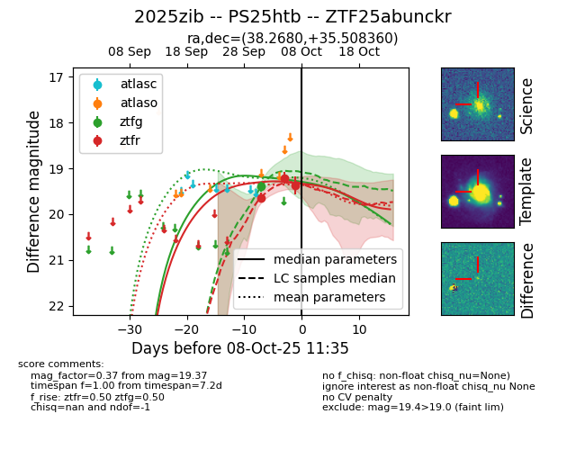
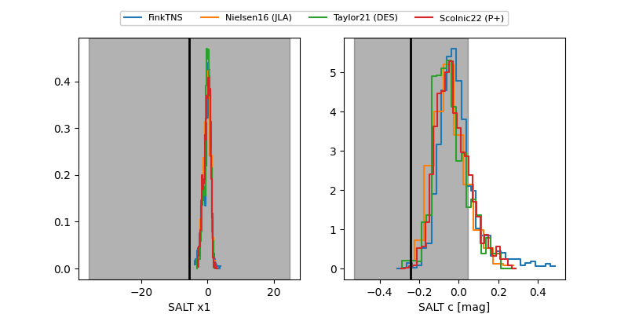

FINK: ZTF25abunckr
Lasair: ZTF25abunckr
ALeRCE: ZTF25abunckr
TNS: 2025zib
YSE: 2025zib
ZTF25abunckr (ztf,fink)
2025zib (tns,yse)
PS25htb (panstarrs)
equatorial (ra, dec) = (38.2680,+35.50836)
galactic (l, b) = (145.2181,-22.92681)


last ztfg=19.40, ztfr=19.37
1 ztfg, 3 ztfr detections